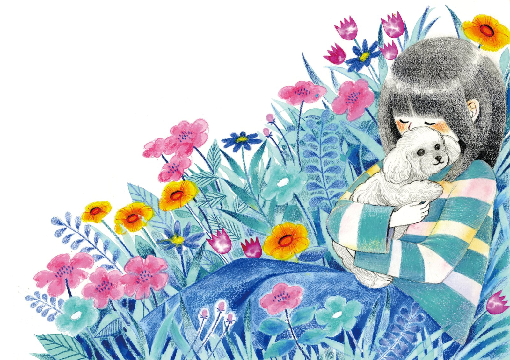
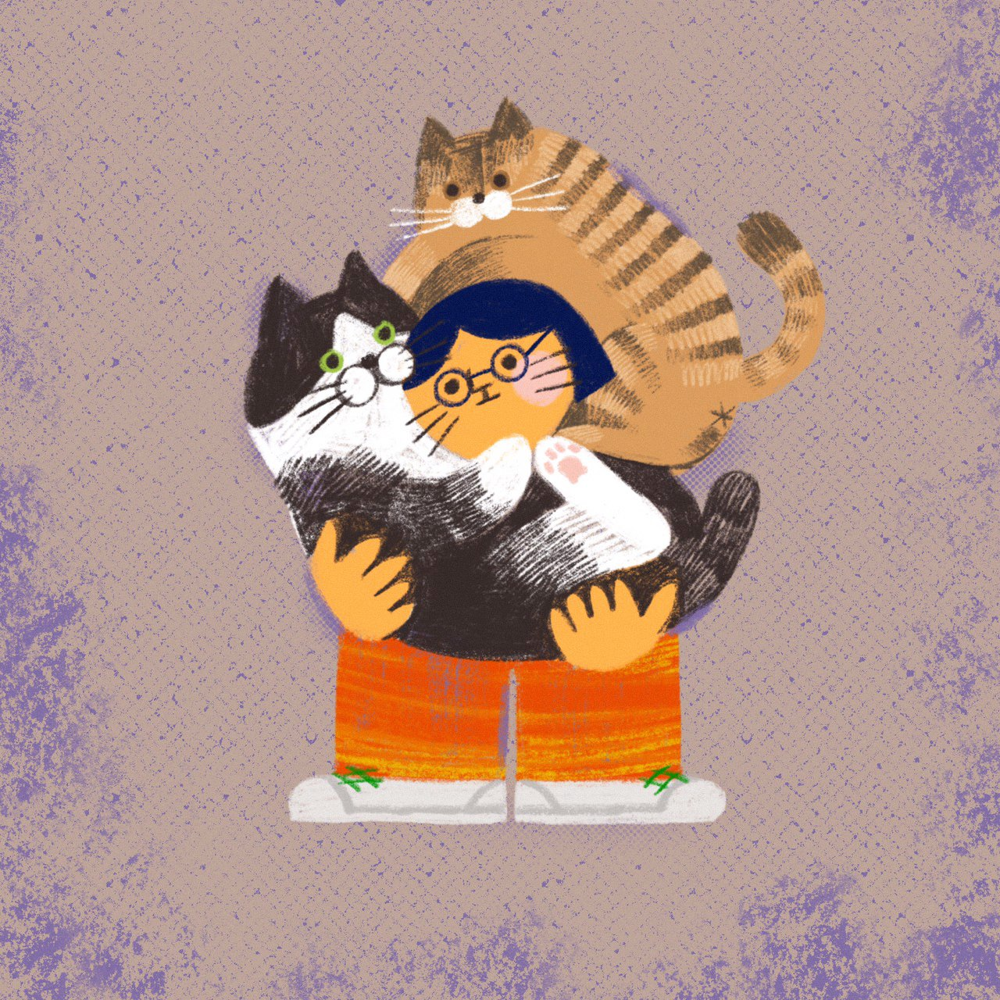

ILLUSTRATION & LITTLE STORIES ✳ TAIWAN
Little things,
big feelings.
把日常的細碎心情，畫成一個個有顏色的小故事。
EXPLORE THE WORKS ↘
a little
world of
wonder ✳
world of
wonder ✳
01 / SELECTED WORKS
Illustration gallery.
一些關於陪伴、想像、動物與日常的畫。

02 / ABOUT THE ARTIST
Hi, I'm Azhi. ✳
喜歡用插畫收藏生活裡微小的情緒，讓動物、花草與想像中的角色，替那些難以說出口的心情發聲。
這裡是一座慢慢長大的小小圖畫花園。歡迎停留、散步，看看今天遇見了什麼故事。
FOLLOW MY INSTAGRAM ↗03 / SAY HELLO
Let's make
something lovely.
插畫創作・合作交流・一起聊聊有趣的故事
VISIT @AZHIART_1001 ↗✳